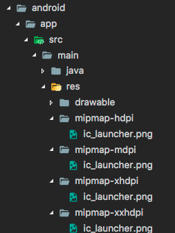
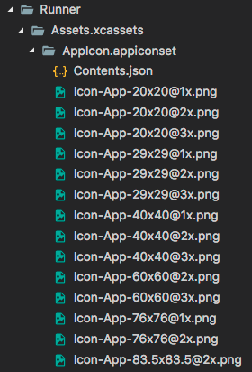
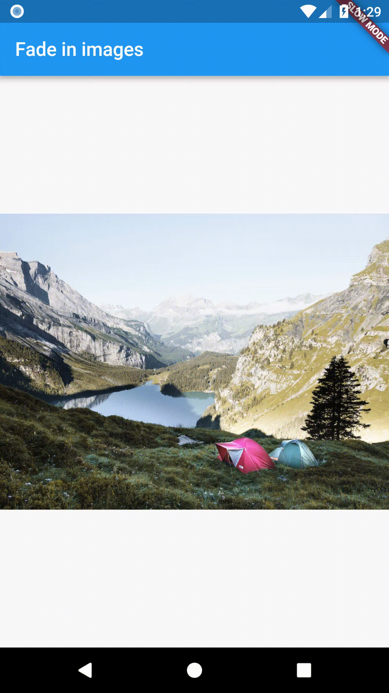
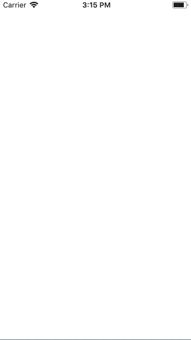

Flutter uygulamaları hem kod hem de varlıklar (bazen kaynaklar/resources olarak adlandırılır) içerebilir. Bir varlık, uygulamanızla birlikte paketlenen, dağıtılan ve çalışma zamanında erişilebilen bir dosyadır. Yaygın varlık türleri arasında statik veriler (örneğin JSON dosyaları), yapılandırma dosyaları, simgeler ve görseller (JPEG, WebP, GIF, animasyonlu WebP/GIF, PNG, BMP ve WBMP) bulunur.
Flutter, bir uygulama için gerekli varlıkları tanımlamak amacıyla
projenizin kök dizininde bulunan pubspec.yaml dosyasını
kullanır.
İşte bir örnek:
flutter:
assets:
- assets/my_icon.png
- assets/background.pngBir dizin altındaki tüm varlıkları dahil etmek için, dizin adını
sonuna / karakteri koyarak belirtin:
flutter:
assets:
- directory/
- directory/subdirectory/Not: Yalnızca doğrudan dizinde bulunan dosyalar dahil edilir. Çözünürlüğe duyarlı varlık görsel varyantları tek istisnadır. Alt dizinlerde bulunan dosyaları eklemek için her dizin için ayrı bir giriş oluşturun.
Not: YAML’da girinti (indentation) önemlidir. Eğer
Error: unable to find directory entry in pubspec.yamlgibi bir hata görürseniz,pubspecdosyanızda yanlış girinti yapmış olabilirsiniz. Aşağıdaki hatalı örneği inceleyin:flutter: assets: - directory/
assets:satırı,flutter:satırının altından tam olarak iki boşluk içeriden başlamalıdır:flutter: assets: - directory/
flutter bölümünün assets alt bölümü,
uygulama ile birlikte dahil edilmesi gereken dosyaları belirtir. Her
varlık, varlık dosyasının bulunduğu yerin açık bir yoluyla (
pubspec.yaml dosyasına göreli olarak) tanımlanır.
Varlıkların bildirilme sırası önemli değildir. Kullanılan gerçek dizin
adı (ilk örnekteki assets veya yukarıdaki örnekteki
directory) önemli değildir.
Derleme (build) sırasında Flutter, varlıkları uygulamaların çalışma zamanında okuduğu varlık demeti (asset bundle) adı verilen özel bir arşive yerleştirir.
Flutter, uygulamanızı derlerken varlık dosyalarını dönüştürmek için
bir Dart paketi kullanmayı destekler. Bunu yapmak için,
pubspec dosyanızda varlık dosyalarını ve dönüştürücü
paketini belirtin. Bunu nasıl yapacağınızı ve kendi varlık dönüştüren
paketlerinizi nasıl yazacağınızı öğrenmek için “Transforming assets at
build time” belgelerine bakabilirsiniz.
Uygulamanız varlıklarına bir AssetBundle nesnesi
aracılığıyla erişebilir.
Bir varlık demeti üzerindeki iki ana yöntem, mantıksal bir anahtar
(logical key) verildiğinde, demetten bir dize/metin varlığı
(loadString()) veya bir görsel/ikili varlık
(load()) yüklemenize olanak tanır. Mantıksal anahtar,
derleme zamanında pubspec.yaml dosyasında belirtilen
varlığın yoluyla eşleşir.
Her Flutter uygulamasının ana varlık demetine kolay erişim için bir
rootBundle nesnesi vardır. Varlıkları doğrudan
package:flutter/services.dart içindeki
rootBundle global statiğini kullanarak yüklemek
mümkündür.
Ancak, uygulamayla birlikte oluşturulan varsayılan varlık demeti
yerine DefaultAssetBundle kullanarak mevcut
BuildContext için AssetBundle’ı elde etmek
önerilir; bu yaklaşım, bir ebeveyn widget’ın çalışma zamanında farklı
bir AssetBundle ikame etmesine olanak tanır, bu da
yerelleştirme (localization) veya test senaryoları için yararlı
olabilir.
Genellikle, örneğin bir JSON dosyası gibi bir varlığı uygulamanın
çalışma zamanı rootBundle’ından dolaylı olarak yüklemek
için DefaultAssetBundle.of() kullanırsınız.
Bir Widget bağlamının dışında veya bir
AssetBundle tanıtıcısının mevcut olmadığı durumlarda, bu
tür varlıkları doğrudan yüklemek için rootBundle
kullanabilirsiniz. Örneğin:
import 'package:flutter/services.dart' show rootBundle;
Future<String> loadAsset() async {
return await rootBundle.loadString('assets/config.json');
}Bir görseli yüklemek için, bir widget’ın build()
yönteminde AssetImage sınıfını kullanın.
Örneğin, uygulamanız önceki örnekteki varlık bildirimlerinden arka plan görselini yükleyebilir:
return const Image(image: AssetImage('assets/background.png'));Flutter, mevcut cihaz piksel oranı (device pixel ratio) için uygun
çözünürlükteki görselleri yükleyebilir. AssetImage, talep
edilen mantıksal bir varlığı, mevcut cihaz piksel oranıyla en yakından
eşleşen varlığa eşler.
Bu eşlemenin çalışması için, varlıklar belirli bir dizin yapısına göre düzenlenmelidir:
.../image.png
.../Mx/image.png
.../Nx/image.png
...vb.Burada M ve N, içerilen görsellerin nominal
çözünürlüğüne karşılık gelen sayısal tanımlayıcılardır. Başka bir
deyişle, görsellerin amaçlandığı cihaz piksel oranını belirtirler.
Bu örnekte, image.png ana varlık (main
asset) olarak kabul edilirken, Mx/image.png ve
Nx/image.png varyantlar olarak kabul
edilir.
Ana varlığın 1.0 çözünürlüğüne karşılık geldiği varsayılır. Örneğin,
my_icon.png adlı bir görsel için aşağıdaki varlık düzenini
düşünün:
.../my_icon.png (mdpi temel)
.../1.5x/my_icon.png (hdpi)
.../2.0x/my_icon.png (xhdpi)
.../3.0x/my_icon.png (xxhdpi)
.../4.0x/my_icon.png (xxxhdpi)Cihaz piksel oranı 1.8 olan cihazlarda,
.../2.0x/my_icon.png varlığı seçilir. Cihaz piksel oranı
2.7 olan bir cihaz için .../3.0x/my_icon.png varlığı
seçilir.
Eğer oluşturulan görselin genişliği ve yüksekliği Image
widget’ında belirtilmemişse, varlığın ana varlıkla aynı miktarda ekran
alanını kaplaması (ancak daha yüksek çözünürlükle) için nominal
çözünürlük kullanılır. Yani, eğer .../my_icon.png 72px’e
72px ise, .../3.0x/my_icon.png 216px’e 216px olmalıdır;
ancak genişlik ve yükseklik belirtilmemişse her ikisi de (mantıksal
piksellerde) 72px’e 72px olarak oluşturulur.
Not: Cihaz piksel oranı
MediaQueryData.size’a bağlıdır, bu daAssetImage’ınızın atası (ancestor) olarakMaterialAppveyaCupertinoAppolmasını gerektirir.
pubspec.yaml dosyasının assets bölümünde
yalnızca ana varlığı veya onun üst dizinini belirtmeniz gerekir. Flutter
varyantları sizin için paketler. Her giriş gerçek bir dosyaya karşılık
gelmelidir, ana varlık girişi hariç. Ana varlık girişi gerçek bir
dosyaya karşılık gelmiyorsa, en düşük çözünürlüğe sahip varlık, bu
çözünürlüğün altındaki cihaz piksel oranlarına sahip cihazlar için yedek
olarak kullanılır. Ancak girişin yine de pubspec.yaml
bildirimine dahil edilmesi gerekir.
Varsayılan varlık demetini kullanan her şey, görselleri yüklerken
çözünürlük duyarlılığını devralır. (ImageStream veya
ImageCache gibi daha düşük seviyeli sınıflarla
çalışırsanız, ölçekle ilgili parametreleri de fark edersiniz.)
Bir paket bağımlılığından bir görsel yüklemek için,
AssetImage’a package argümanı
sağlanmalıdır.
Örneğin, uygulamanızın aşağıdaki dizin yapısına sahip
my_icons adlı bir pakete bağlı olduğunu varsayalım:
.../pubspec.yaml
.../icons/heart.png
.../icons/1.5x/heart.png
.../icons/2.0x/heart.png
...vb.Görseli yüklemek için şunu kullanın:
return const AssetImage('icons/heart.png', package: 'my_icons');Paketin kendisi tarafından kullanılan varlıklar da yukarıdaki gibi
package argümanı kullanılarak getirilmelidir.
İstenen varlık paketin pubspec.yaml dosyasında
belirtilmişse, uygulamayla otomatik olarak paketlenir. Özellikle,
paketin kendisi tarafından kullanılan varlıklar, kendi
pubspec.yaml dosyasında belirtilmelidir.
Bir paket, pubspec.yaml dosyasında belirtilmemiş olsa
bile lib/ klasöründe varlıklara sahip olmayı seçebilir. Bu
durumda, bu görsellerin paketlenmesi için uygulamanın hangilerini dahil
edeceğini kendi pubspec.yaml dosyasında belirtmesi gerekir.
Örneğin, fancy_backgrounds adlı bir paket aşağıdaki
dosyalara sahip olabilir:
.../lib/backgrounds/background1.png
.../lib/backgrounds/background2.png
.../lib/backgrounds/background3.png
Diyelim ki ilk görseli dahil etmek için, uygulamanın
pubspec.yaml dosyası bunu assets bölümünde
belirtmelidir:
flutter:
assets:
- packages/fancy_backgrounds/backgrounds/background1.pnglib/ kısmı ima edilir (varsayılır), bu yüzden varlık
yoluna dahil edilmemelidir.
Eğer bir paket geliştiriyorsanız, paket içindeki bir varlığı yüklemek
için bunu paketin pubspec.yaml dosyasında belirtin:
flutter:
assets:
- assets/images/Görseli paketiniz içinde yüklemek için şunu kullanın:
return const AssetImage('packages/fancy_backgrounds/backgrounds/background1.png');Flutter varlıkları, Android’de AssetManager ve iOS’ta
NSBundle kullanılarak platform koduna kolayca sunulur.
Android’de varlıklar AssetManager API’si aracılığıyla
kullanılabilir. Örneğin openFd içinde kullanılan arama
anahtarı, PluginRegistry.Registrar üzerindeki
lookupKeyForAsset veya FlutterView üzerindeki
getLookupKeyForAsset ile elde edilir.
PluginRegistry.Registrar bir eklenti geliştirirken
kullanılırken, FlutterView bir platform görünümü (platform
view) içeren bir uygulama geliştirirken tercih edilir.
Örnek olarak, pubspec.yaml dosyanızda aşağıdakileri
belirttiğinizi varsayalım:
flutter:
assets:
- icons/heart.pngBu, Flutter uygulamanızdaki şu yapıyı yansıtır:
.../pubspec.yaml
.../icons/heart.png
...vb.Java eklenti kodunuzdan icons/heart.png dosyasına
erişmek için aşağıdakileri yapın:
AssetManager assetManager = registrar.context().getAssets();
String key = registrar.lookupKeyForAsset("icons/heart.png");
AssetFileDescriptor fd = assetManager.openFd(key);iOS’ta varlıklar mainBundle aracılığıyla kullanılabilir.
Örneğin pathForResource:ofType: içinde kullanılan arama
anahtarı, FlutterPluginRegistrar üzerindeki
lookupKeyForAsset veya
lookupKeyForAsset:fromPackage: ile; ya da
FlutterViewController üzerindeki
lookupKeyForAsset: veya
lookupKeyForAsset:fromPackage: ile elde edilir.
FlutterPluginRegistrar bir eklenti geliştirirken
kullanılırken, FlutterViewController bir platform görünümü
içeren bir uygulama geliştirirken tercih edilir.
Örnek olarak, yukarıdaki Flutter ayarına sahip olduğunuzu varsayalım.
Objective-C eklenti kodunuzdan icons/heart.png dosyasına
erişmek için aşağıdakileri yaparsınız:
NSString* key = [registrar lookupKeyForAsset:@"icons/heart.png"];
NSString* path = [[NSBundle mainBundle] pathForResource:key ofType:nil];Swift uygulamanızdan icons/heart.png dosyasına erişmek
için aşağıdakileri yaparsınız:
let key = controller.lookupKey(forAsset: "icons/heart.png")
let mainBundle = Bundle.main
let path = mainBundle.path(forResource: key, ofType: nil)Daha eksiksiz bir örnek için, pub.dev üzerindeki Flutter
video_player eklentisinin uygulamasına bakın.
Flutter’ı mevcut bir iOS uygulamasına ekleyerek uygularken, iOS’ta
barındırılan ve Flutter’da kullanmak istediğiniz görselleriniz olabilir.
Bunu başarmak için, görsel verilerini Dart’a
FlutterStandardTypedData olarak iletmek üzere platform
kanallarını (platform channels) kullanın.
Platform projelerinde varlıklarla doğrudan çalışılması gereken başka durumlar da vardır. Aşağıda, Flutter çerçevesi yüklenip çalışmadan önce varlıkların kullanıldığı iki yaygın durum verilmiştir.
Bir Flutter uygulamasının başlatma simgesini güncellemek, yerel Android veya iOS uygulamalarındaki başlatma simgelerini güncellemekle aynı şekilde çalışır.
Flutter projenizin kök dizininde,
.../android/app/src/main/res yoluna gidin.
mipmap-hdpi gibi çeşitli bitmap kaynak klasörleri zaten
ic_launcher.png adlı yer tutucu görseller içerir. Bunları,
Android
Geliştirici Kılavuzu’nda belirtilen ekran yoğunluğu başına önerilen
simge boyutuna uygun olarak istediğiniz varlıklarla değiştirin.

Not: Eğer
.pngdosyalarını yeniden adlandırırsanız,AndroidManifest.xmldosyanızın<application>etiketininandroid:iconözelliğindeki karşılık gelen adı da güncellemelisiniz.
Flutter projenizin kök dizininde, .../ios/Runner yoluna
gidin. Assets.xcassets/AppIcon.appiconset dizini zaten yer
tutucu görseller içerir. Bunları, Apple İnsan Arayüzü Yönergeleri (Human
Interface Guidelines) tarafından dikte edilen dosya adlarına göre
uygun boyuttaki görsellerle değiştirin. Orijinal dosya adlarını
koruyun.

Flutter ayrıca, Flutter çerçevesi yüklenirken Flutter uygulamanıza geçiş başlatma ekranları çizmek için yerel platform mekanizmalarını kullanır. Bu başlatma ekranı, Flutter uygulamanızın ilk karesini oluşturana kadar kalır.
Not: Bu, uygulamanızın
main()işlevinderunApp()çağırmazsanız (veya daha spesifik olarak,PlatformDispatcher.onDrawFrameyanıtı olarakFlutterView.render()çağırmazsanız), başlatma ekranının sonsuza kadar kalacağı anlamına gelir.
Flutter uygulamanıza bir başlatma ekranı (aynı zamanda “splash
screen” olarak da bilinir) eklemek için
.../android/app/src/main yoluna gidin.
res/drawable/launch_background.xml içinde, başlatma
ekranınızın görünümünü özelleştirmek için bu katman listesi çizilebilir
(layer list drawable) XML’ini kullanın. Mevcut şablon, yorum satırına
alınmış kodda beyaz bir açılış ekranının ortasına bir görsel eklemenin
bir örneğini sunar. İstenen efekti elde etmek için yorum satırlarını
kaldırabilir veya diğer drawable’ları
kullanabilirsiniz.
Daha fazla ayrıntı için, “Adding a splash screen to your Android app” (Android uygulamanıza açılış ekranı ekleme) konusuna bakın.
“Splash screen”inizin ortasına bir görsel eklemek için
.../ios/Runner yoluna gidin.
Assets.xcassets/LaunchImage.imageset içine
LaunchImage.png, LaunchImage@2x.png,
LaunchImage@3x.png adlı görselleri bırakın. Farklı dosya
adları kullanırsanız, aynı dizindeki Contents.json
dosyasını güncelleyin.
Ayrıca .../ios/Runner.xcworkspace dosyasını açarak
Xcode’da başlatma ekranı storyboard’unuzu tamamen özelleştirebilirsiniz.
Proje Gezgini’nde Runner/Runner’a gidin ve
Assets.xcassets’i açarak görselleri bırakın veya
LaunchScreen.storyboard içindeki Interface Builder’ı
kullanarak herhangi bir özelleştirme yapın.
Daha fazla ayrıntı için, “Adding a splash screen to your iOS app” (iOS uygulamanıza açılış ekranı ekleme) konusuna bakın.
Resim görüntülemek çoğu mobil uygulama için temeldir. Flutter, farklı
türdeki resimleri görüntülemek için Image widget’ını
sağlar.
Bir URL’den gelen resimlerle çalışmak için
Image.network() kurucusunu (constructor) kullanın.
Image.network('[https://picsum.photos/250?image=9](https://picsum.photos/250?image=9)'),Image widget’ı hakkında yararlı bir şey: Hareketli
gifleri destekler.
Varsayılan Image.network kurucusu, yüklemeden sonra
resimlerin yavaşça belirmesi (fade in) gibi daha gelişmiş işlevleri ele
almaz. Bu görevi gerçekleştirmek için Yer tutucu ile resimleri
yavaşça belirginleştirme konusuna göz atın.
Etkileşimli örnek
import 'package:flutter/material.dart';
void main() => runApp(const MyApp());
class MyApp extends StatelessWidget {
const MyApp({super.key});
@override
Widget build(BuildContext context) {
var title = 'Web Images';
return MaterialApp(
title: title,
home: Scaffold(
appBar: AppBar(title: Text(title)),
body: Image.network('https://picsum.photos/250?image=9'),
),
);
}
}Varsayılan Image widget’ını kullanarak resimleri
görüntülerken, yüklendikleri anda ekrana birden bire fırladıklarını fark
edebilirsiniz. Bu, kullanıcılarınız için görsel olarak sarsıcı
olabilir.
Bunun yerine, başlangıçta bir yer tutucu (placeholder) görüntülemek
ve resimlerin yüklendikçe yavaşça belirginleşmesi (fade in) daha hoş
olmaz mıydı? Tam olarak bu amaçla FadeInImage widget’ını
kullanın.
FadeInImage, herhangi bir türdeki resimle çalışır:
bellek içi (in-memory), yerel varlıklar (local assets) veya internetten
gelen resimler.
Bu örnekte, basit şeffaf bir yer tutucu için
transparent_image paketini kullanın.
FadeInImage.memoryNetwork(
placeholder: kTransparentImage,
image: '[https://picsum.photos/250?image=9](https://picsum.photos/250?image=9)',
),Tam örnek:
import 'package:flutter/material.dart';
import 'package:transparent_image/transparent_image.dart';
void main() {
runApp(const MyApp());
}
class MyApp extends StatelessWidget {
const MyApp({super.key});
@override
Widget build(BuildContext context) {
const title = 'Fade in images';
return MaterialApp(
title: title,
home: Scaffold(
appBar: AppBar(title: const Text(title)),
body: Stack(
children: <Widget>[
const Center(child: CircularProgressIndicator()),
Center(
child: FadeInImage.memoryNetwork(
placeholder: kTransparentImage,
image: '[https://picsum.photos/250?image=9](https://picsum.photos/250?image=9)',
),
),
],
),
),
);
}
}
Yer tutucular için yerel varlıkları kullanmayı da düşünebilirsiniz.
İlk olarak, varlığı projenin pubspec.yaml dosyasına ekleyin
(daha fazla ayrıntı için Varlık ve resim ekleme
bölümüne bakın):
flutter:
assets:
- assets/loading.gifArdından, FadeInImage.assetNetwork() kurucusunu
kullanın:
FadeInImage.assetNetwork(
placeholder: 'assets/loading.gif',
image: '[https://picsum.photos/250?image=9](https://picsum.photos/250?image=9)',
),Tam örnek:
import 'package:flutter/material.dart';
void main() {
runApp(const MyApp());
}
class MyApp extends StatelessWidget {
const MyApp({super.key});
@override
Widget build(BuildContext context) {
const title = 'Fade in images';
return MaterialApp(
title: title,
home: Scaffold(
appBar: AppBar(title: const Text(title)),
body: Center(
child: FadeInImage.assetNetwork(
placeholder: 'assets/loading.gif',
image: '[https://picsum.photos/250?image=9](https://picsum.photos/250?image=9)',
),
),
),
);
}
}
Flutter’da video oynatmak, video_player eklentisi
kullanılarak gerçekleştirilen yaygın bir işlemdir. Bu eklenti, dosya
sisteminden, varlıklardan (assets) veya internetten video oynatmanıza
olanak tanır.
Flutter, iOS’te oynatma işlemleri için AVPlayer, Android’de ise ExoPlayer kullanır. Bu rehber, temel oynatma ve duraklatma kontrolleriyle internetten video akışının nasıl yapılacağını gösterir.
video_player
bağımlılığını ekleyinÖncelikle projenize eklentiyi dahil etmeniz gerekir. Terminalinizde şu komutu çalıştırın:
flutter pub add video_playerUygulamanızın internetten video akışı yapabilmesi için platforma özel yapılandırmaları güncellemeniz gerekir.
<project root>/android/app/src/main/AndroidManifest.xml
dosyasında <application> etiketinden hemen sonra şu
izni ekleyin:<uses-permission android:name="android.permission.INTERNET"/><project root>/ios/Runner/Info.plist dosyasına
şunları ekleyin:<key>NSAppTransportSecurity</key>
<dict>
<key>NSAllowsArbitraryLoads</key>
<true/>
</dict>Uyarı: iOS simülatörleri sadece asset (varlık) videolarını oynatabilir. Ağ tabanlı videoları test etmek için fiziksel bir iOS cihazı kullanmalısınız.
VideoPlayerController oluşturun ve başlatınVideoPlayerController, oynatmayı kontrol etmenizi ve
videoya bağlanmanızı sağlar. Videoları oynatabilmek için önce
denetleyiciyi başlatmanız (initialize) gerekir.
Bunun için bir StatefulWidget kullanın ve denetleyiciyi
initState içinde oluşturup, dispose içinde
serbest bırakın.
class VideoPlayerScreen extends StatefulWidget {
const VideoPlayerScreen({super.key});
@override
State<VideoPlayerScreen> createState() => _VideoPlayerScreenState();
}
class _VideoPlayerScreenState extends State<VideoPlayerScreen> {
late VideoPlayerController _controller;
late Future<void> _initializeVideoPlayerFuture;
@override
void initState() {
super.initState();
// Denetleyiciyi internetten bir video ile oluşturun.
_controller = VideoPlayerController.networkUrl(
Uri.parse(
'https://flutter.github.io/assets-for-api-docs/assets/videos/butterfly.mp4',
),
);
// Denetleyiciyi başlatın ve Future'ı saklayın.
_initializeVideoPlayerFuture = _controller.initialize();
}
@override
void dispose() {
// Kaynakları serbest bırakmak için denetleyiciyi dispose edin.
_controller.dispose();
super.dispose();
}
@override
Widget build(BuildContext context) {
// UI kodları bir sonraki adımda eklenecek.
return Container();
}
}Video oynatıcıyı görüntülemek için VideoPlayer
widget’ını kullanın. Ancak, videoların genellikle belirli bir en boy
oranında (örneğin 16:9) görüntülenmesi gerekir. Bu nedenle,
VideoPlayer widget’ını bir AspectRatio
widget’ı ile sarmanız önerilir.
Ayrıca, denetleyicinin başlatılmasını beklemek için bir
FutureBuilder kullanmalısınız. Bu, video hazır olana kadar
bir yükleme çarkı (spinner) göstermenizi sağlar.
// build metodu içinde:
FutureBuilder(
future: _initializeVideoPlayerFuture,
builder: (context, snapshot) {
if (snapshot.connectionState == ConnectionState.done) {
// Denetleyici başlatıldıysa, doğru en boy oranını kullanın.
return AspectRatio(
aspectRatio: _controller.value.aspectRatio,
child: VideoPlayer(_controller),
);
} else {
// Denetleyici hala başlatılıyorsa yükleme göstergesi görüntüleyin.
return const Center(child: CircularProgressIndicator());
}
},
)Varsayılan olarak video duraklatılmış durumda başlar. Oynatmak için
play(), duraklatmak için pause() metodunu
kullanın. Kullanıcı etkileşimi için bir
FloatingActionButton ekleyebilirsiniz.
FloatingActionButton(
onPressed: () {
// İkonun doğru güncellenmesi için setState kullanın.
setState(() {
if (_controller.value.isPlaying) {
_controller.pause();
} else {
_controller.play();
}
});
},
// Oynatıcı durumuna göre doğru ikonu gösterin.
child: Icon(
_controller.value.isPlaying ? Icons.pause : Icons.play_arrow,
),
)import 'dart:async';
import 'package:flutter/material.dart';
import 'package:video_player/video_player.dart';
void main() => runApp(const VideoPlayerApp());
class VideoPlayerApp extends StatelessWidget {
const VideoPlayerApp({super.key});
@override
Widget build(BuildContext context) {
return const MaterialApp(
title: 'Video Player Demo',
home: VideoPlayerScreen(),
);
}
}
class VideoPlayerScreen extends StatefulWidget {
const VideoPlayerScreen({super.key});
@override
State<VideoPlayerScreen> createState() => _VideoPlayerScreenState();
}
class _VideoPlayerScreenState extends State<VideoPlayerScreen> {
late VideoPlayerController _controller;
late Future<void> _initializeVideoPlayerFuture;
@override
void initState() {
super.initState();
// Create and store the VideoPlayerController. The VideoPlayerController
// offers several different constructors to play videos from assets, files,
// or the internet.
_controller = VideoPlayerController.networkUrl(
Uri.parse(
'https://flutter.github.io/assets-for-api-docs/assets/videos/butterfly.mp4',
),
);
// Initialize the controller and store the Future for later use.
_initializeVideoPlayerFuture = _controller.initialize();
// Use the controller to loop the video.
_controller.setLooping(true);
}
@override
void dispose() {
// Ensure disposing of the VideoPlayerController to free up resources.
_controller.dispose();
super.dispose();
}
@override
Widget build(BuildContext context) {
return Scaffold(
appBar: AppBar(title: const Text('Butterfly Video')),
// Use a FutureBuilder to display a loading spinner while waiting for the
// VideoPlayerController to finish initializing.
body: FutureBuilder(
future: _initializeVideoPlayerFuture,
builder: (context, snapshot) {
if (snapshot.connectionState == ConnectionState.done) {
// If the VideoPlayerController has finished initialization, use
// the data it provides to limit the aspect ratio of the video.
return AspectRatio(
aspectRatio: _controller.value.aspectRatio,
// Use the VideoPlayer widget to display the video.
child: VideoPlayer(_controller),
);
} else {
// If the VideoPlayerController is still initializing, show a
// loading spinner.
return const Center(child: CircularProgressIndicator());
}
},
),
floatingActionButton: FloatingActionButton(
onPressed: () {
// Wrap the play or pause in a call to `setState`. This ensures the
// correct icon is shown.
setState(() {
// If the video is playing, pause it.
if (_controller.value.isPlaying) {
_controller.pause();
} else {
// If the video is paused, play it.
_controller.play();
}
});
},
// Display the correct icon depending on the state of the player.
child: Icon(
_controller.value.isPlaying ? Icons.pause : Icons.play_arrow,
),
),
);
}
}Projenizi, uyumlu Dart paketlerini kullanarak derleme (build) sırasında varlıkları otomatik olarak dönüştürecek şekilde yapılandırabilirsiniz.
Dönüştürülecek varlıkları ve ilgili dönüştürücü paketini
pubspec.yaml dosyasında listeleyin.
flutter:
assets:
- path: assets/logo.svg
transformers:
- package: vector_graphics_compilerBu yapılandırma ile assets/logo.svg dosyası, derleme
çıktısına kopyalanırken vector_graphics_compiler paketi
tarafından dönüştürülür. Bu paket, SVG dosyalarını önceden derleyerek
(precompile) vector_graphics paketi kullanılarak
görüntülenebilen optimize edilmiş ikili dosyalara dönüştürür:
import 'package:vector_graphics/vector_graphics.dart';
const Widget logo = VectorGraphic(loader: AssetBytesLoader('assets/logo.svg'));Bir varlık dönüştürücüsüne bir argüman dizesi iletmek için, bunu
pubspec dosyasında ayrıca belirtin:
flutter:
assets:
- path: assets/logo.svg
transformers:
- package: vector_graphics_compiler
args: ['--tessellate', '--font-size=14']Varlık dönüştürücüleri zincirlenebilir ve bildirildikleri sırayla uygulanır. Hayali paketler kullanan aşağıdaki örneği düşünün:
flutter:
assets:
- path: assets/kus.png
transformers:
- package: grayscale_filter
- package: png_optimizerBurada, kus.png önce grayscale_filter
paketi tarafından dönüştürülür (gri tonlamalı yapılır). Çıktı daha sonra
png_optimizer paketi tarafından dönüştürülür ve son olarak
derlenen uygulamaya dahil edilir.
Kendi dönüştürücünüzü yazmak isterseniz, bir varlık dönüştürücüsü
aslında dart run ile çağrılan ve en az iki argüman alan bir
Dart komut satırı uygulamasıdır:
--input: Dönüştürülecek dosyanın yolunu içerir.--output: Dönüştürücü kodunun çıktısını yazması gereken
konumu belirtir.Dönüştürücü sıfır olmayan bir çıkış koduyla (non-zero exit code)
biterse, uygulama derlemesi başarısız olur ve varlık dönüşümünün
başarısız olduğunu açıklayan bir hata mesajı görüntülenir. Dönüştürücü
tarafından işlemin stderr akışına yazılan her şey hata
mesajına dahil edilir.
Dönüştürücünün çağrılması sırasında, FLUTTER_BUILD_MODE
ortam değişkeni, kullanılan derleme modunun CLI adına ayarlanır.
Örneğin, uygulamanızı flutter run -d macos --release ile
çalıştırırsanız, FLUTTER_BUILD_MODE, release
olarak ayarlanır.
Sıradaki Adım: Bu özelliği denemek için projenize
bir SVG dosyası ekleyip vector_graphics paketini kurarak
performans farkını gözlemlemek ister misiniz?
Bu doküman, Flutter resmi dokümantasyonundan türetilmiş Türkçe ders notudur.
Orijinal kaynak:
https://docs.flutter.dev/ui/assets/assets-and-images
Türkçe çeviri ve düzenleme:
Doç. Dr. Hakan Temiz
Bu dokümandaki içerikler aşağıdaki açık lisanslar kapsamında sunulmaktadır:
Metin içerikleri (anlatım ve açıklamalar):
Flutter resmi dokümantasyonundan alınmış veya uyarlanmıştır.
Lisans: Creative Commons Attribution 4.0 International
(CC BY 4.0)
https://creativecommons.org/licenses/by/4.0/
Bu lisans kapsamında: - İçerik kopyalanabilir, dağıtılabilir ve
uyarlanabilir
- Ticari kullanım serbesttir
- Kaynak belirtilmesi zorunludur
Kod örnekleri:
Flutter resmi dokümantasyonundan alınmış veya uyarlanmıştır.
Lisans: BSD 3-Clause License
https://opensource.org/licenses/BSD-3-Clause
Bu lisans kapsamında: - Kodlar kopyalanabilir, değiştirilebilir ve
dağıtılabilir
- Ticari kullanım serbesttir
- Lisans bildiriminin korunması gerekir